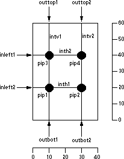

The FPGA technology is a "soft" technology that creates primitives according to an FPGA Architecture file.
Once you switch to the FPGA technology,
the component menu lists a set of commands for configuring the technology and for programming FPGA circuits.
The FPGA Architecture file contains all of the information needed to define a specific FPGA chip.
It has three sections:
the Primitive Definition section,
the Block Definition section, and the Arcitecture section.
The Primitive Definition section describes the basic blocks for a family of FPGA chips
(these are primitives in the FPGA technology).
The Block Definition section builds upon the primitives to create higher-level blocks.
Finally, the Architecture section defines the top-level block that is the FPGA.
An FPGA Architecture file must have the Primitive Definition section,
but it need not have the Block Definition or Architecture Sections.
This is because the placement of the primitives can be saved in an Electric library,
rather than the architecture file.
Thus, after reading the Primitive Definition section (which creates the primitives),
and reading the Block Definition and Architecture Sections
(which places the primitives to create a chip library) the library can be saved to disk.
Subsequent design activity can proceed by reading only the Primitive Definition section and then
reading the library with the chip definition.
This avoids large FPGA Architecture files
(the Primitive Definition section will be smaller than the Block Definition and Architecture sections).
Primitive Definition Section
The Primitive Definition section defines the lowest-level blocks,
which become primitive nodes in the FPGA technology.
A primitive definition looks like this:
(primdef
(attributes
(name PRIMNAME)
(size X Y)
)
(ports
(port
(name PORTNAME)
(position X Y)
(direction input | output | bidir)
)
)
(components
(pip
(name PIPNAME)
(position X Y)
(connectivity NET1 NET2)
)
)
(nets
(net
(name INTNAME)
(segment FROMPART TOPART)
)
)
)
The attributes section defines general information about the block.
The ports section defines external connections.
The components section defines logic in the block (currently only PIPs).
The nets section defines internal networks.
There can be multiple segment entries in a net,
each defining a straight wire that runs from the FROMPART to the TOPART.
These parts can be either port PORTNAME or coord X Y,
depending on whether the net ends at a port or at an arbitrary position inside of the primitive.
|
For example, this block has two vertical nets and two horizontal nets.
Four pips are placed at the intersections.
Six ports are defined (two on the left, two on the top, and two on the bottom).
The code is as follows:
(primdef
(attributes
(name sampleblock)
(size 40 60)
)
(ports
(port (name inleft1) (position 0 40) (direction input) )
(port (name inleft2) (position 0 20) (direction input) )
(port (name outtop1) (position 10 60) (direction output) )
(port (name outtop2) (position 30 60) (direction output) )
(port (name outbot1) (position 10 0) (direction output) )
(port (name outbot2) (position 30 0) (direction output) )
)
(components
(pip (name pip1) (position 10 20) (connectivity intv1 inth1) )
(pip (name pip2) (position 30 20) (connectivity intv2 inth1) )
(pip (name pip3) (position 10 40) (connectivity intv1 inth2) )
(pip (name pip4) (position 30 40) (connectivity intv2 inth2) )
)
(nets
(net (name intv1) (segment port outbot1 port outtop1 ) )
(net (name intv2) (segment port outbot2 port outtop2 ) )
(net (name inth1) (segment port inleft2 coord 30 20 ) )
(net (name inth2) (segment port inleft1 coord 30 40 ) )
)
)
|  |
Block Definition and Architecture Sections
The Block Definition and Architecture sections define higher-level blocks composed of primitives.
They looks like this:
(blockdef
(attributes
(name CHIPNAME)
(size X Y)
(wirecolor COLOR)
(repeatercolor COLOR)
)
(ports
(port
(name PORTNAME)
(position X Y)
(direction input | output | bidir)
)
)
(components
(instance
(attributes ATTPAIRS)
(type BLOCKTYPE)
(name BLOCKNAME)
(position X Y)
(rotation ROT)
)
(repeater
(name BLOCKNAME)
(porta X Y)
(portb X Y)
(direction vertical | horizontal)
)
)
(nets
(net
(name INTNAME)
(segment FROMPART TOPART)
)
)
)
The only difference between the Architecture section and the Block Definition section is that the
Architecture section has the keyword architecture instead of blockdef.
There can be only one architecture section, but there can be many blockdefs,
defining a complete hierarchy.
The attributes section defines general information about the block.
The ports section defines external connections.
The components section defines logic in the block
(currently instances of other blocks or repeaters).
The rotation of an instance is the number of degrees counterclockwise, rotated about the center.
The attributes section of the instance assigns name/value pairs
(this can be used to program the FPGA).
The nets section defines internal networks.
There can be multiple segment entries in a net,
each defining a straight wire that runs from the FROMPART to the TOPART.
These parts can be either component INSTNAME PORTNAME, port PORTNAME,
or coord X Y, depending on whether the net ends at a component,
port or at an arbitrary position inside of the block.
|
Here is an example of block definition code and its layout.
(blockdef
(attributes
(name testblock)
(size 80 150)
)
(components
(instance (type sampleblock) (name block0)
(position 30 80) )
(instance (type sampleblock) (name block1)
(position 30 10) )
(repeater (name r0) (porta 10 120)
(portb 20 120) (direction horizontal)
)
(repeater (name r1) (porta 10 100)
(portb 20 100) (direction horizontal)
)
(repeater (name r2) (porta 10 50)
(portb 20 50) (direction horizontal)
)
(repeater (name r3) (porta 10 30)
(portb 20 30) (direction horizontal)
)
)
|  |
(ports
(port (name top0) (position 40 150) (direction bidir) )
(port (name top1) (position 60 150) (direction bidir) )
(port (name left0) (position 0 120) (direction input) )
(port (name left1) (position 0 100) (direction input) )
(port (name left2) (position 0 50) (direction input) )
(port (name left3) (position 0 30) (direction input) )
(port (name bot0) (position 40 0) (direction bidir) )
(port (name bot1) (position 60 0) (direction bidir) )
)
(nets
(net (name iv0)
(segment port top0 component block0 outtop1) )
(net (name iv1)
(segment port top1 component block0 outtop2) )
(net (name iv2)
(segment component block0 outbot1 component block1 outtop1))
(net (name iv3)
(segment component block0 outbot2 component block1 outtop2))
(net (name iv4)
(segment component block1 outbot1 port bot0) )
(net (name iv5)
(segment component block1 outbot2 port bot1) )
(net (name ih0)
(segment port left0 component r0 a) )
(net (name ih1)
(segment component r0 b component block0 inleft1) )
(net (name ih2)
(segment port left1 component r1 a) )
(net (name ih3)
(segment component r1 b component block0 inleft2) )
(net (name ih4)
(segment port left2 component r2 a) )
(net (name ih5)
(segment component r2 b component block1 inleft1) )
(net (name ih6)
(segment port left3 component r3 a) )
(net (name ih7)
(segment component r3 b component block1 inleft2) )
)
)
Commands
To read an architecture file, click on the "Read Arch." entry in the component menu.
You will be prompted for an architecture file.
To read only the primitives from an architecture file, use the "Read Prims." entry.
The display-level can be controlled by clicking on the "Wires:" entry.
Its state can be set to "Full" (to see all wires), "Empty" (to show no wires),
or "Active" (to show the active wires inside of primitives).
Active wires are those connected to PIPs that have been programmed.
The "Text:" entry sets the display of text on primitives and can be either "On" or "Off".
If you highlight an area of the FPGA chip and click "See Active",
then the area will be redisplayed, showing only the active segments.
Once an FPGA has been created,
you can program the PIPs by selecting a component and clicking on the "Edit Pips" entry.
This will display a list of active PIPs on the component.
For example, after clicking on one of the "SampleBlock" instances,
you can type the string "pip1 pip4" to program two of the pips in that instance.